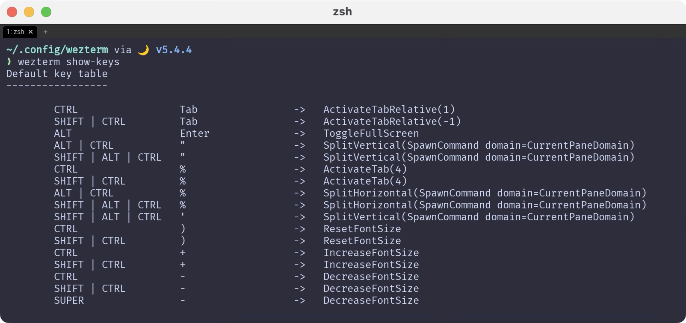
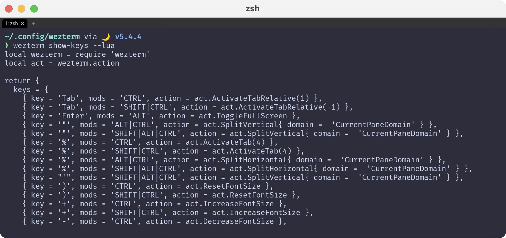

Key Binding
ここはちょっと難しいというか、どこまでWezTermをメインに持ってくるのかみたいなところがあります。
例えばtmux。
WezTerm自体がtmuxと同等かそれ以上の機能を持っているので、
WezTermに対してtmuxと同じキーバインドを与えてしまえば、これは不要になるわけです。1
と言ってもわたしがローカルでしか使っていないから大丈夫なだけで、ネットワークを介して使う場合は困る事もあるかもしれません。
実際、デフォルトでは徹底的に他のソフトウェアとの衝突を避けています。
The default key assignments are shown in the table.
デフォルトのキー割り当ては、表のとおりです。
現在のキーバインド確認
まずは現在のキーバインドがどうなっているのかを確認します。
Prints the complete set of key assignments based on your config file.
設定ファイルに基づいたキー割り当ての完全なセットを表示します。
実行してみましょう。そのままWezTermでweztermコマンドを使えば良いです。

そう、これが現在のキーバインドですね。
設定を落とし込む
で、ここで提案なんですが、キーバインドを自分の設定ファイルに落とし込んじゃったらどうかな？と思うわけです。
それをやるにはどうすれば簡単かな〜っていう話になるんですけど、方法はすでにありました。

さすがですね☺️ もはやレールは存在していました。これをkeybinds.luaに持っていけば良いだけです。
これはもうプロっぽく片付けましょう。シェル芸というやつです✨
上記コマンドのファイル出力先は現在のディレクトリです。
~/.config/weztermに移動するか、出力先を~/.config/wezterm/keybinds.luaに指定してください。
これだけでもう直接流し込めちゃうんですね。簡単〜😆
読み込み先を切り替える
ここまでは暗黙的にデフォルト設定が適用されていましたが、これからは自分で作ったkeybinds.luaを使っていきましょう。
冒頭のリンクを再掲しますが、一番下にこのようにあります。
If you don't want the default assignments to be registered, you can disable all of them with this configuration; if you chose to do this, you must explicitly register every binding.
デフォルトの割り当てを登録したくない場合は、この設定ですべての割り当てを無効にできます。これを選択した場合は、すべてのバインディングを明示的に登録しなければなりません。
デフォルト設定は以下で完全に無効化されます。不安に感じるようであればスキップしても大丈夫です。
実際、わたしもWezTermを使う前はiTerm2の上でtmuxを動かしていました。